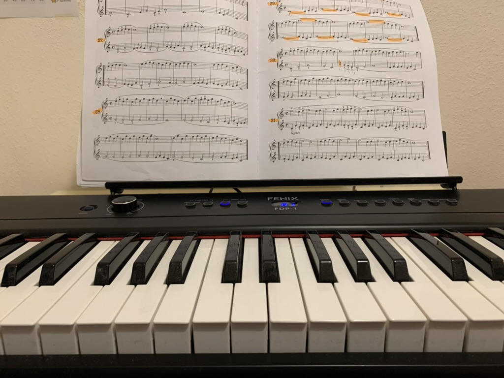

Kitap okumak, yazılım geliştirme ve piyano çalmak, benim için hem birer hobi hem de kişisel gelişimimin vazgeçilmez parçalarıdır. Kitap okumak, bilgiye olan merakımı besleyen, hayal gücümü geliştiren ve beni yeni dünyalarla tanıştıran bir tutku. Farklı türlerde kitaplar okuyarak hem teknik bilgilerimi artırıyorum hem de bakış açımı genişletiyorum. Özellikle teknoloji, bilim ve kişisel gelişim üzerine kitaplara ilgi duyuyorum. Bu tür eserler, hem mesleki becerilerimi güçlendirmemde hem de hayatı daha anlamlı kılacak perspektifler kazanmamda bana yol gösteriyor.
Yazılım geliştirme ise sadece bir meslek değil, aynı zamanda benim için bir yaratım süreci. Kod yazarken problemlere çözüm üretmek, yeni fikirler geliştirmek ve projeleri hayata geçirmek beni oldukça motive ediyor. Teknolojinin sürekli değişen ve gelişen yapısı, bu alanı her zaman dinamik ve heyecan verici kılıyor. Yazılım geliştirme sayesinde sadece analitik düşünme yeteneğimi değil, aynı zamanda sabır ve detaylara dikkat etme becerilerimi de geliştirdiğime inanıyorum.
Piyano çalmak ise bana yaratıcılığın ve duyguların gücünü hissettiren bir uğraş. Müzik, hayatıma hem dinginlik hem de coşku katıyor. Piyano başında vakit geçirmek, gündelik hayatın stresini azaltmanın en güzel yollarından biri. Yeni parçalar öğrenirken hem disiplinli bir çalışma alışkanlığı kazanıyorum hem de müziğin evrenselliğini deneyimleme şansı buluyorum.

Bu üç hobi, hem zihinsel hem de duygusal olarak beni dengeleyen ve güçlendiren etkinlikler. Kitapların bilgi dünyası, yazılımın üretkenliği ve müziğin duygusal derinliği bir araya geldiğinde, kendimi daha bütün bir birey olarak hissediyorum. Bu nedenle, bu hobilerim hayatımın ayrılmaz birer parçası haline geldi.